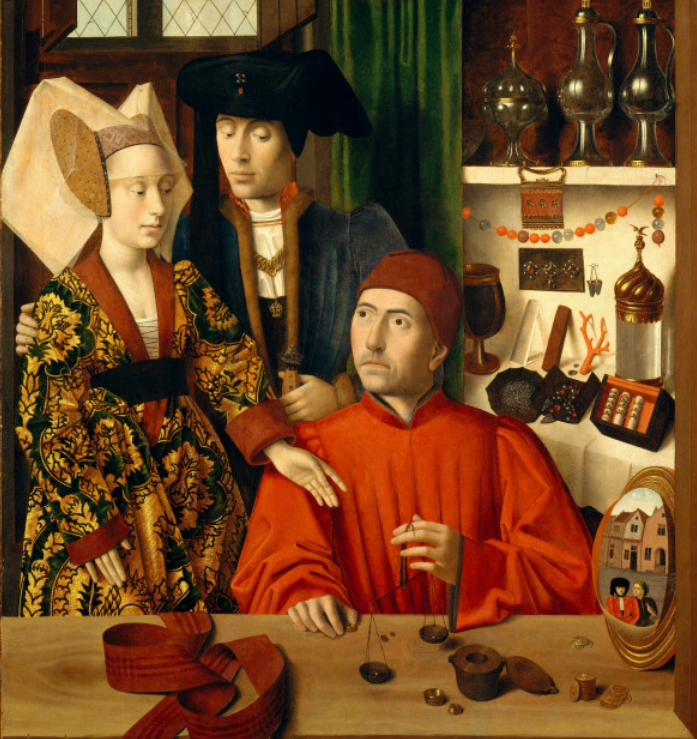
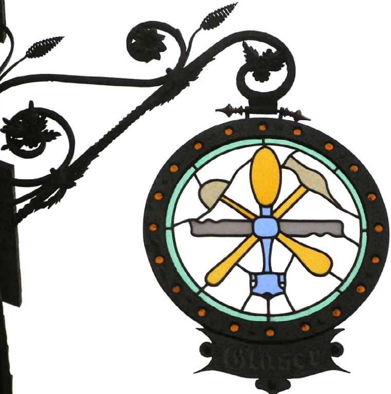
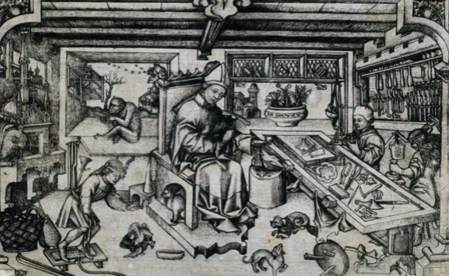

<div class="middle center"> <div style="width: 100%"> # 语言与交往的唯物史观探源 <hr/> 基于《德意志意识形态》的马克思主义分析 <br/> 马原第二小组展示 </div> </div> <!--s--> <div class="middle center"> <div style="width: 100%"> # 引言：我们如何思考语言？ </div> </div> <!--v--> ## 核心问题：语言从何而来？ > 是神授的礼物？是抽象的精神符号？是人类与生俱来的本能？ <hr/> <div class="mul-cols"> <div class="col"> ### 传统观点 - 神授论 - 精神符号论 - 生物本能论 </div> <div class="col"> ### 马克思主义视角 - **物质生产实践** - **社会交往需要** - **历史发展产物** </div> </div> <!--s--> <div class="middle center"> <div style="width: 100%"> # 交往的产生：源于物质生产的现实必要性 </div> </div> <!--v--> ## 1.物质生产是交往产生的前提 > <font style="font-size: 13pt;">"生产本身又是以个人之间的**交往**为前提的，这种交往的形式又是由**生产**决定的。"</font> <hr/> <font style="font-size: 23px;">①个人要生存，不在于他们的思想，必须首先进行 “生产自己所必须的生活资料”。</font> <font style="font-size: 23px;">②无论是原始部落的狩猎、捕鱼，还是古代公社的农业耕作，都需要个人之间的协作（如分工协作捕获猎物、共同开垦土地）</font> => <font style="font-size: 23px;">③生产无法孤立进行</font> <font style="font-size: 23px;">④这种为实现物质生产而形成的 “许多个人的合作”，就是交往的最初形态。</font> <font style="font-size: 26px;">马克思恩格斯明确指出：“生产本身又是以个人之间的交往为前提的，这种交往的形式又是由生产决定的”，即生产的内容（如狩猎、农耕、手工业）决定了交往的方式（如部落内分工、公社成员协作）。</font> **所以是先有生产的刚需，再有交往的想法。** <!--v--> ## 2.交往形式随生产发展而演进 |历史阶段|生产力|交往范围| |:--:|:--:|:--:| |<font style="font-size: 20px;">原始社会</font>|<font style="font-size: 20px;">生产力低下，人们使用石器工具，以采集、狩猎为生</font>|<font style="font-size: 20px;">交往主要局限于氏族部落内部</font>| |<font style="font-size: 20px;">奴隶社会</font>|<font style="font-size: 20px;">生产力有所发展，出现剩余产品，私有制产生</font>|<font style="font-size: 20px;">交往范围逐渐扩大到部落之间和不同地区</font>| |<font style="font-size: 20px;">封建社会</font>|<font style="font-size: 20px;">铁器的广泛使用推动了农业生产的发展，手工业和商业也有所发展</font>|<font style="font-size: 20px;">交往形式更加多样化，包括贸易、文化交流等，地区之间和国家之间的联系逐渐增多</font>| |<font style="font-size: 20px;">资本主义社会</font>|<font style="font-size: 20px;">工业革命带来了生产力的巨大飞跃，机器大生产取代手工劳动</font>|<font style="font-size: 20px;">交往形式发生了根本性变化，世界市场形成，各国之间的经济、政治和文化联系日益紧密，世界越来越成为一个整体</font>| |<font style="font-size: 20px;">社会主义社会</font>|<font style="font-size: 20px;">随着生产力的进一步发展，社会主义社会取代资本主义社会</font>|<font style="font-size: 20px;">交往方面，将更加注重公平、合作与共赢，推动构建人类命运共同体</font>| <!--v--> ## 3.交往的本质： “现实的社会关系” > <font style="font-size: 13pt;">交往不是**观念的联结**，而是现实的**社会关系**，是**物质利益联盟**</font> 例子： <div class="mul-cols"> <div class="col"> <font style="font-size: 26px;">1. 中世纪城市的行会交往，本质是手工业者为保护 “自身劳动”、对抗贵族掠夺而形成的物质利益联盟；</font>    </div> <div class="col"> <font style="font-size: 26px;">2. 近代商业交往的扩大，则是 “工场手工业发展” 与 “世界市场形成” 的结果，而非 “观念推动”。</font> </div> </div> <!--s--> <div class="middle center"> <div style="width: 100%"> # 语言的产生：交往需求催生的 “实践的现实意识” </div> </div> <!--v--> ## 1.语言源于"交往的迫切需要" > <font style="font-size: 18px;">"语言是一种**实践的**、既为别人存在因而也为我自身而存在的、**现实的意识**。"</font> <hr/> <div class="mul-cols"> <div class="col"> - <font style="font-size: 22px;">原始狩猎中的信号传递（如传递狩猎信号、分配劳动任务、告知危险、分享食物）</font> - <font style="font-size: 22px;">劳动中的经验分享 （如师傅对帮工的指导）</font> - <font style="font-size: 22px;">商业活动的议价交易</font> => <font style="font-size: 28px;">迫切的交往需求催生了语言</font> </div> <div class="col"> </div> </div> 马克思恩格斯明确指出，语言的本质是 “**为交往服务的现实意识**”，而非孤立的 “精神符号”。 <!--v--> ## 2.语言与物质活动、物质交往 “直接交织” > <font style="font-size: 18px;">"思想、观念、意识的生产最初是直接与人们的**物质活动**，与人们的**物质交往**，与现实生活的**语言**交织在一起的。"</font> <hr/> <font style="font-size: 30px;">语言的产生从一开始就未脱离**物质实践**</font> <font style="font-size: 26px;">1. 人类关于 **“工具使用”** 的语言（如称呼石斧、弓箭的词汇），直接对应他们的**生产工具**</font> <font style="font-size: 26px;">2. 人类关于**“分工”**的语言（如区分 “猎人”“渔人” 的词汇），直接反映他们的**物质交往关系**</font> <font style="font-size: 26px;">3. 中世纪行会中 “师傅”“帮工” 的**称谓**，对应手工业生产的**宗法分工**</font> <font style="font-size: 26px;">4. **近代** “资本”“工资” 的**词汇**，对应工场手工业阶段的**生产关系**</font> <!--v--> ## 例子 <hr/> <div class="mul-cols"> <div class="col"> <font style="font-size: 21px;">1. 无论在哪种语言中，「妈妈」的发音都<strong>惊人地相似</strong>：普通话里叫「mama」，英语是「mammy」或「mother」，法语是「maman」，印地语是「mata」，甚至斯瓦希里语也是「mama」。</font> </div> <div class="col"> <font style="font-size: 21px;">2. 世界各地的大豆均直接或间接引自中国，许多国家的语言中至今保留着<strong>大豆古语“菽”的发音</strong>，如拉丁语“Soja”、英文”Soy“、法文”Soya“和德文”Soja”。</font> </div> </div> <!--v--> #### 语言的演变不可避免的受到当时物质交往的影响 <div class="mul-cols"> <div class="col"> <font style="font-size: 17px;"><strong>1.</strong> 在<strong>法国革命斗争</strong>中，资产阶级为了<strong>拉拢平民共同对付封建贵族</strong>，不惜放弃温文尔雅的宫廷语言而使用菜市场上老大娘们的粗俚语言。但是，当资产阶级政权成功以后立刻把枪口对准它曾经的同盟军—劳动大众，还在语言上对粗俗语言进行大清洗，力图恢复革命前的法国语言。（《革命前后的法国语言》）</font> </div> <div class="col"> <font style="font-size: 17px;"><strong>2.</strong> 中世纪欧洲，<strong>拉丁语是知识和权力的象征</strong>，而各地区的方言则是“俗语”。然而，随着商业复兴和市民阶层的壮大，情况发生了变化。例如，意大利的但丁用托斯卡纳方言创作《神曲》，英国的乔叟用伦敦方言创作《坎特伯雷故事集》。 方言文学的兴起，<strong>反映了新兴市民阶级在文化上挑战封建神权的要求</strong>。他们需要一种更能表达自己世俗生活、商业活动和思想情感的文学语言。经济基础变化导致文化话语权转移，商业资本的发展形成了有钱有闲的市民阶层，他们成为方言文学的新受众和推广者。这一语言领域的变革，显示出<strong>新的经济力量如何寻求建立属于自己的文化的上层建筑</strong>，以对抗旧的经济基础的上层建筑。</font> </div> </div> <!--s--> <div class="middle center"> <div style="width: 100%"> # 从历史到当代 <hr/> 马克思主义语言观不仅是**历史解释工具**，更是锐利的**当代分析武器** 让我们用它来透视几个熟悉的语言现象 </div> </div> <!--v--> ## 网络流行语 <div class="mul-cols"> <div class="col"> ### 反映社会存在 - "996"、"内卷"：高强度劳动 - "社恐"：原子化社会的交往方式 </div> <div class="col"> ### 体现阶级意识 - "打工人"、"小镇做题家" - 劳动者的自嘲与身份认同 - 揭示阶级矛盾 <img src="pic/worker.jpg" width="80%" style="float: middle center"> </div> </div> <!--v--> ## 表情包与广告语 <div class="mul-cols"> <div class="col"> ##### 表情包 - 文字在互联网交流中**低效且苍白** - 表情包将图像、文字、符号等压缩成一个集合 - 满足了**快节奏、强情绪**的网络社交需求 => 表情包是数字时代中**交往的迫切需要的产物** </div> <div class="col"> ##### 广告语 - 现代社会商品被赋予了某种神秘的光环和独立的生命 - 广告语的核心功能，就是将商品的使用价值转化为符号价值 - 例如，耐克广告中的“just do it”，使得耐克的产品超越了普通运动装备的功能，将其塑造成一种挑战自我、突破极限的精神图腾 => 广告语是商家与潜在消费者**交往的迫切需要的产物** </div> </div> <!--v--> ## 大语言模型与AI伴侣 背景：AI伴侣是利用大型语言模型来模拟人类互动提供陪伴情感支持，娱乐和个性化协助的软件应用，如character.ai，replica等 产生原因： - 由于当代社会的原子化，导致人与人之间的关系变得疏离，感情变得淡薄。 - 但是人作为社会性动物又有交往的需求， - 所以AI伴侣应运而生。 <font style="font-size: 17px;">(右图为网站上不同性格形象的AI伴侣)</font> <!--s--> <div class="middle center"> <div style="width: 100%"> # 核心结论与总结 </div> </div> <!--v--> ## 马克思主义语言观的核心要义 > <font style="font-size: 20px;">马克思主义方法对语言和交往的分析，**始终以 “物质生产” 为根本出发点**，颠覆了唯心主义将二者归结为 “精神活动” 的谬误</font> 1. **二者的最终根源物质是生产**：交往因生产的协作需求产生，语言因交往的沟通需求产生，二者均非 “观念的自我发展”，而是物质生产关系的派生形式； 2. **二者的发展受生产力制约**：交往形式随所有制演进（部落 - 公社 - 封建）而变化，语言内容随生产方式（狩猎 - 农耕 - 工场手工业）而丰富，均遵循 “生产力决定生产关系” 的历史规律； 3. **二者的本质是 “现实的社会关系”的反应**：语言和交往并非孤立的 “个人行为”，而是承载着分工、所有制、阶级等社会关系的现实载体，其演变反映着社会物质基础的变革。 <!--s--> ## 分工 | 任务模块 | 具体职责 | 负责人 | | :--- | :--- | :--- | | **1. 理论核心组** | 深度研读《德意志意识形态》中关于语言、意识、交往的论述，梳理马克思主义的基本观点。 | 谭俊哲 林海 | | **2. 历史与案例组** | 负责资料搜集。查找人类学、历史学上支持马克思主义的观点的案例。 | 徐睿妍 李雅涵 | | **3. 当代应用组** | 用马克思主义语言观分析当代现象 | 郑金潇 王铭斌 | | **4. 内容统筹与幻灯片制作** | 收集所有组的研究成果和文字，制作幻灯片 | 魏卓廷 | | **5. 展示与报告** | 负责演讲任务，控制时间，处理Q&A环节的预演。 | 周一烁 | <!--s--> <div class="middle center"> <div style="width: 100%"> # 谢谢大家！ </div> </div>